School Trips
A Hands-On Educational Farm Trip for Students
Joe's Nithilam organizes educational farm visits designed for school groups, giving students direct, hands-on exposure to farming and rural life instead of just reading about it. Located in Puthagaram, Wallajabad, Kanchipuram district — about 50 km from Chennai — the farm is an easy day-trip destination for schools looking for an experiential learning outing.
A typical school visit includes a guided farm tour, farming demonstrations, seed planting, watering plants, weeding, identifying plants and insects, learning how compost is made, and collecting leaves for nature collages. Children also get to try traditional Tamil games as part of the day, connecting classroom concepts with real outdoor experience.
Group size, itinerary, and duration can be planned around your school's curriculum and schedule — reach out to us in advance to discuss dates and logistics.
Farming Activities
Seed planting, watering, weeding, and harvesting — real farm work adapted for students.
Nature & Composting
Identifying plants and insects, collecting leaves, and learning how compost is made.
Traditional Games
A break from the lesson plan with traditional Tamil games like Pallanguzhi, Nondi, and Uriyadi.
Sample Day-Trip Schedule
A typical full-day visit — timings can be adjusted to fit your school's bus and bell schedule.
Arrival & Orientation
Welcome, headcount, and a quick safety briefing for students and chaperones.
Guided Farm Tour
A tractor ride around the paddy fields and gardens.
Hands-On Workshop
Students activity like:
- 🌱 Make a plant seed bag
- 🌾 Sow seeds in a small garden bed
- 💧 Water the plants
- 🌿 Remove weeds from the garden
- 🪴 Fill pots with soil and plant seedlings
- 🌻 Observe and identify different plants
- 🐛 Look for helpful insects like butterflies and ladybugs
- 🍂 Collect dry leaves for compost
- 🌼 Make a nature collage using leaves and flowers
- 🌽 Learn about different farm tools
- 🌳 Plant a sapling
- 🌿 Explore the herbal garden and learn about medicinal plants
- 📝 Draw or write about what they saw on the farm
- ♻️ Learn how compost is made
Lunch Break
A relaxed meal at the Farm House.
Seasonal Activity
Tyre riding, traditional Tamil games, harvesting, or a nature trail depending on the season:
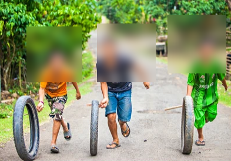
Tyre Riding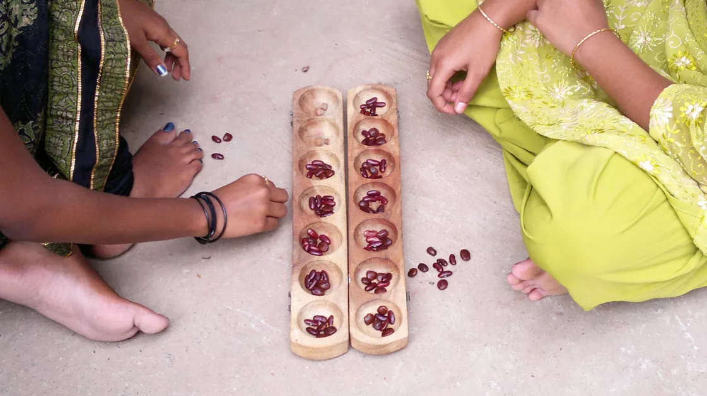
Pallanguzhi (பல்லாங்குழி) – counting & strategy game with seeds and a wooden board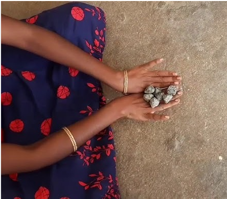
Sottanguli / Five Stones (சொட்டாங்குளி) – tossing and catching five small stones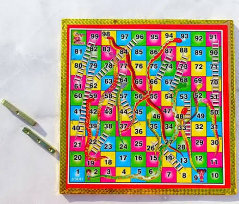
Paramapadam (பரமபதம்) – traditional snakes and ladders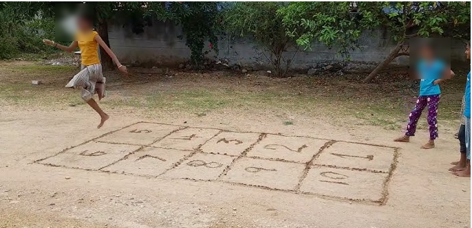
Nondi (நொண்டி) – hopscotch played by hopping on one foot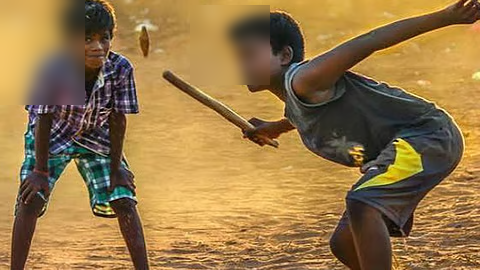
Kitti Pul (கிட்டிப்புள்) – stick-and-peg game, similar to gilli-danda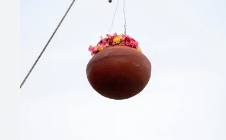
Uriyadi (உரியடி) – festival pot-breaking game Thaayam (தாயம்) – traditional dice and board game
Thaayam (தாயம்) – traditional dice and board game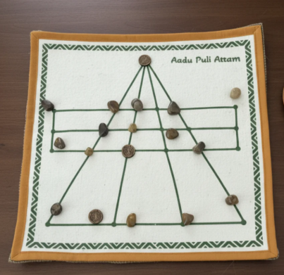
Aadu Puli Aattam (ஆடு புலி ஆட்டம்) – goats-versus-tigers strategy board game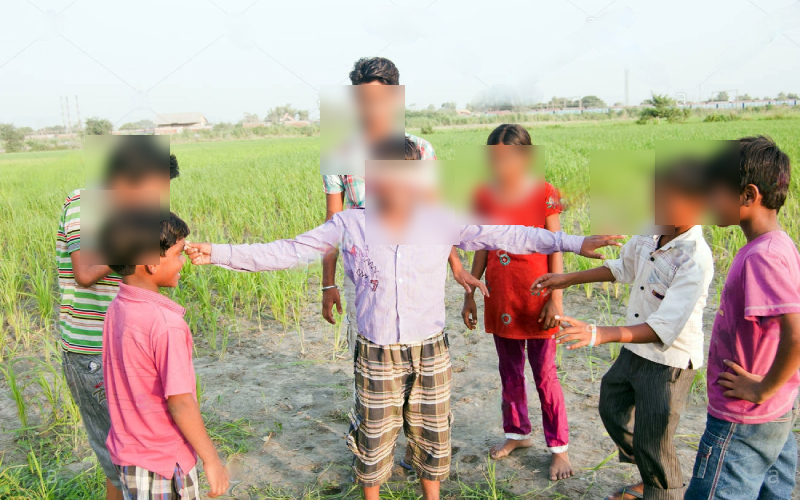
Kannaamoochi (கண்ணாமூச்சி) – hide-and-seek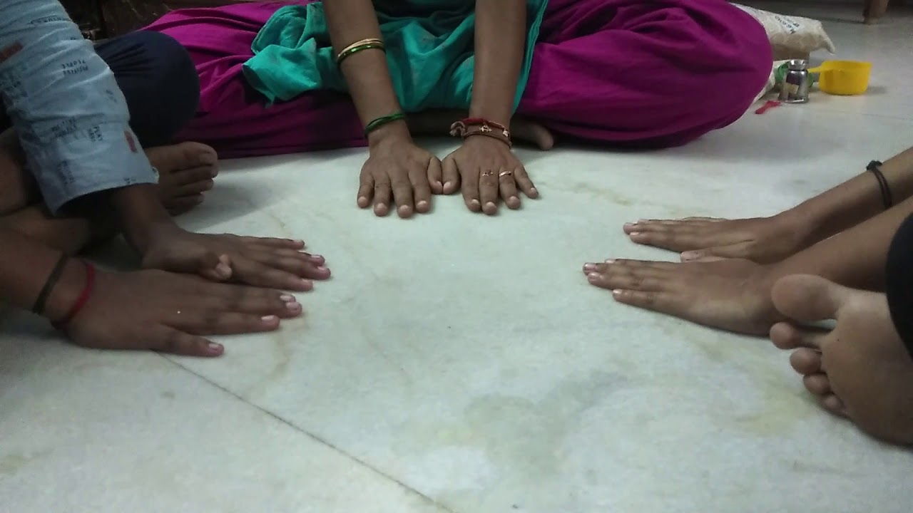
Kokku Parakkudhu (கொக்கு பறக்குது) – a listening and reaction game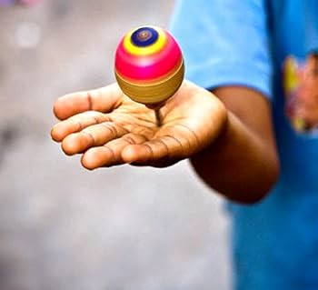
Pambaram (பம்பரம்) – spinning top game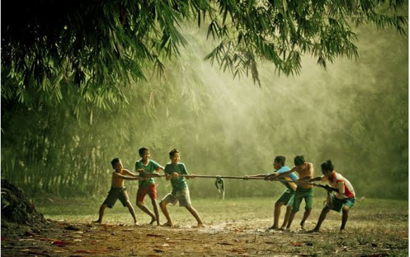
Kayiru Izhuthal (கயிறு இழுத்தல்) – tug of war
Snacks & Refreshments
A light snack and refreshing drinks before the ride home.
Wrap-Up & Departure
Final headcount, souvenirs, and a safe send-off.